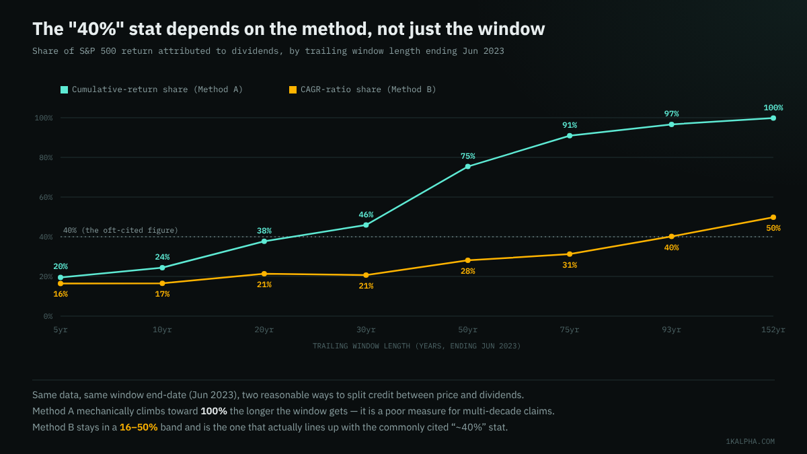
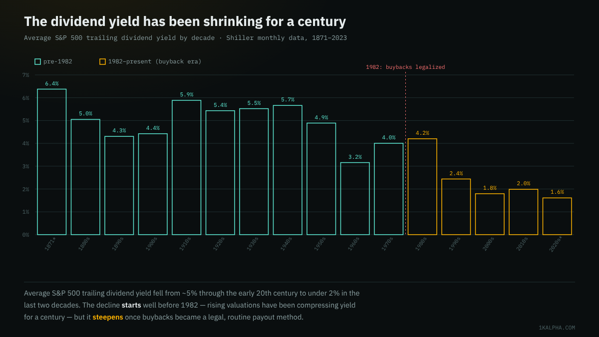

Do Dividends Really Explain ~40% of the S&P 500's Return? A 152-Year Test
A specific number circulates constantly in dividend-investing content: dividends have accounted for roughly 40% of the S&P 500's total return since 1930. It traces back to an often-cited analysis from asset manager Hartford Funds — reproduced, with figures in the low-to-mid 40s depending on the exact end date, by outlets ranging from Janus Henderson's research desk to Motley Fool decade breakdowns. A second, newer claim usually rides alongside it: that share has been shrinking for decades because companies now prefer buybacks to dividends, a shift that accelerated once the SEC's Rule 10b-18 gave buybacks a clear legal safe harbor in November 1982.
Both claims are specific enough to check against real data, so I rebuilt the decomposition from scratch using Robert Shiller's 152-year monthly dataset rather than taking anyone's number on faith. Short version: the ~40% figure replicates almost exactly — but only if you measure it one particular way. Measure it the other, equally defensible way, and the number is nowhere close to 40% for almost any window you pick. The buyback-era claim holds up better: the dividend share of return really did shrink by roughly two-thirds after 1982, though the data here can't cleanly separate "companies chose buybacks" from "stocks simply got more expensive," which lowers yield mechanically regardless of payout policy.
Methodology
I used the same source as the leverage-DCA post on this blog: Robert Shiller's monthly S&P 500 dataset (price, trailing dividends, CPI), mirrored as CSV by datasets/s-and-p-500 on GitHub, covering January 1871 through June 2023 — the same cutoff used there, since that mirror's dividend and CPI columns stop being reliably populated after that month. That's 1,829 monthly return observations.
From the raw series I built two cumulative indices, both starting at 100 in January 1871:
- Price-only index — tracks the nominal S&P 500 price level alone, no dividends.
- Total-return index — each month adds the approximate monthly dividend (Shiller's trailing-12-month dividend figure, divided by 12) on top of the price return, and reinvests it immediately. This is the standard way total-return indices are built from trailing annualized dividend series; it will slightly misstate the exact timing of real quarterly dividend payments, but it's a reasonable approximation over multi-year windows.
For any window, I then computed the dividend's "share" of the return two different, both-reasonable ways:
- Method A — cumulative-return share:
(total cumulative return − price-only cumulative return) ÷ total cumulative return. This compares the two dollar-growth multiples directly. - Method B — CAGR-ratio share:
1 − (price-only annualized return ÷ total annualized return). This compares the two annualized growth rates instead of the cumulative dollar multiples.
These sound like they should give similar answers. Over short-to-medium windows they roughly do. Over long windows they diverge enormously — which turns out to be the most important finding in this whole exercise.
Does the "~40%" number hold up?
Replicating the Hartford-style window — December 1929 through June 2023, 93.5 years — the price-only index compounded at 5.8%/year nominal, the total-return index at 9.8%/year. Run that through Method B and dividends account for 40.1% of the annualized return — landing almost exactly on the commonly cited figure, which is a genuinely good sign that both calculations are measuring the same thing.
Run the identical window through Method A instead, and dividends account for 96.7% of the cumulative dollar growth. That is not a typo, and it is not a different claim about a different period — it's the same 93.5 years, the same two indices, a different (and equally standard) way of asking "how much of this came from dividends."

The reason is mechanical, not a data error. Method A compares two compounded multiples, and compounding is multiplicative: a total-return index that's merely a little ahead of the price-only index every year will, given enough decades, pull dramatically further ahead in dollar terms, because the gap itself keeps compounding. Over 152 years the price-only index grew about 10x while the total-return index grew roughly 6,400x — so by Method A's bookkeeping, dividends get credit for essentially all of that growth (99.8%), which isn't a meaningful statement about where annual returns come from so much as a statement about what compounding does to small persistent gaps over very long periods. Method B, by instead comparing the two annualized growth rates, isn't distorted by how many years you let the gap compound, which is why it's the metric that stays interpretable — and the one that happens to match what asset managers have actually been citing.
Has the buyback era really changed the split?
Splitting the record at Rule 10b-18's November 1982 adoption:
| Period | Years | Price CAGR | Total CAGR | Avg. yield | Method A share | Method B share |
|---|---|---|---|---|---|---|
| 1871–1981 (pre-buyback) | 110.9 | 3.0% | 8.3% | 5.0% | 99.6% | 63.2% |
| 1982–2023 (buyback era) | 41.5 | 9.0% | 11.6% | 2.4% | 63.8% | 22.8% |
| Last 20yr (2003–2023) | 20.0 | 7.7% | 9.8% | 1.9% | 37.7% | 21.4% |
By either method, the direction is the same and the drop is large: Method B's dividend share falls from 63% pre-1982 to 23% after, and the average dividend yield earned over those months falls from 5.0% to 2.4%, roughly in half. The last 20 years alone average a 1.9% yield — the lowest sustained reading in the whole 152-year record — with Method B's share essentially flat at ~21%, suggesting the post-1982 shift mostly already happened rather than still being in progress.

That chart is also the honest caveat to the buyback narrative: yield was already drifting down from roughly 5–6% in the first half of the record to 3–4% by the 1960s–70s, before buybacks were a meaningful payout channel. What changes after 1982 is the rate of decline, not the direction. Attributing the whole post-1982 drop to buybacks specifically, rather than to rising valuations compressing yield on their own, would be overclaiming what this dataset can show.
Why there's no single "dividend share by decade" number in this post
I deliberately left decade-by-decade dividend shares out of the table above, after computing them and finding they're close to uninterpretable. In the 1930s, the total-return index was essentially flat for the decade (total CAGR ≈ 0.0%, after a nearly 90% price crash into 1932 followed by a partial recovery), which sends both share methods to absurd values — Method B calculates to over 20,000% for that one decade. In the 2000s, the total return was negative (−0.7%/year, the market's "lost decade"), which makes "dividends caused X% of the return" a nonsensical question when there's no positive return to apportion credit for. Both decompositions are well-behaved only when the total return for the window is comfortably positive, which is exactly why the multi-decade and multi-era windows above are the trustworthy numbers here, not any single ten-year slice.
Bottom line
- The ~40% figure is real, not an urban legend — it replicates independently from raw Shiller data to within a point of the commonly cited range, using the CAGR-ratio method.
- But the figure is far more fragile than its confident, specific-sounding citation suggests. It depends on using one of two equally standard decomposition methods; the other method says dividends explain nearly all (97%) of the same period's growth. Neither method is "wrong" — they answer subtly different questions — but only one of them produces numbers that stay comparable across different window lengths, and it's worth knowing which one you're looking at before repeating a stat like this.
- The buyback-era decline in dividend share is real and large (roughly 63% → 23% by the more stable method) but overlaps with a century-long valuation-driven yield decline that predates buybacks entirely, so crediting the drop solely to corporate payout preferences overstates what this data can isolate.